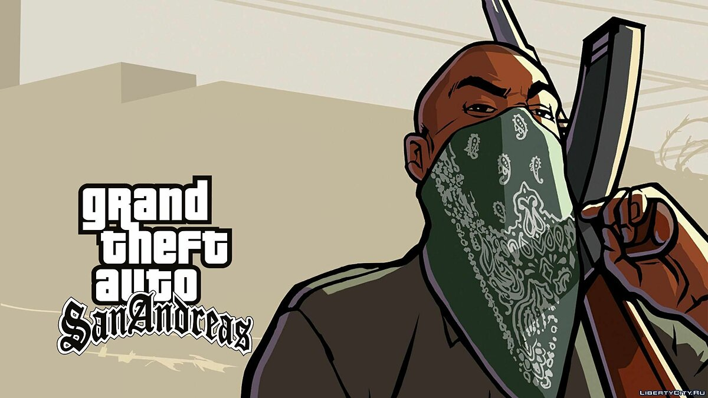

El estado de San Andreas tiene un gran repertorio de organizaciones criminales radicadas en su territorio. Desde la perspectiva del protagonista de Grand Theft Auto: San Andreas, Carl Johnson, las bandas varÃan entre una posición agresiva y una pasiva con respecto al dicho protagonista.
Las Familias son una pandilla localizada en Los Santos. Usan el color verde para identificarse y son procedentes de Grove Street, una calle de Ganton. Se cree que no tienen una gran participación en el tráfico de drogas, lo que ha llevado a su declive. Algunos OGs están fuertemente involucrados en el negocio del PCP.
Los Ballas son una banda callejera de la ciudad llamada Los Santos. Sus orÃgenes son un misterio, solamente se sabe que se fundó durante los años 70, utilizan el color morado en sus atuendos como identificativo y son los enemigos a muerte de los Families. Se identifican con el color amarillo y siempre lo usan en sus vinchas.
Los Santos Vagos, son una banda callejera hispana de la ciudad de Los Santos Se identifican con el color amarillo y siempre lo usan en sus vinchas. Son una banda con un nivel de agresividad muy alta. Por lo general dominan los territorios del noreste de Los Santos, como Las Colinas o Los Flores.
Los Varrios Aztecas son una banda proveniente de México de Los Santos. Son rivales de Los Santos Vagos y los San Fierro Rifa y asociados a los Families. Son liderados por Cesar Vialpando. Utilizan el color azul celeste para identificarse. Tienen problemas con los Vagos, Rifas y Ballas
Los San Fierro Rifa o simplemente Rifas son una banda hispana ubicada en San Fierro, es la única banda hispana de San Fierro. Los Rifas andan en guerra con las bandas mexicanas de Los Santos, pero en 1992 andan en tratos sobre drogas con Los Santos Vagos, se identifican con el azul.
Los Da Nang Boys son una banda vietnamita de San Fierro, proceden de Da Nang, en Vietnam, de ahà el nombre. No son la única banda vietnamita que se menciona en el juego, pero si la única que tiene protagonismo, no tienen color especÃfico, pero se asume que es el marrón.
Los Mountain Cloud Boys son una triada que aparece en Grand Theft Auto: San Andreas. La triada es procedente de Kowloon, Hong Kong, su división en San Andreas está liderada por Wu Zi Mu "Woozie" y está localizada en Chinatown, San Fierro. su vestimenta suele ser ropa formal y elegante, su color es el negro.

El Loco Syndicate es una organización criminal formada por una alianza. Está liderada por T-Bone Méndez, Mike Toreno y Jizzy B y compuesta por sus trabajadores manufactureros de drogas. El Loco Syndicate está asociado con los Ballas con el cual negocian las drogas tanto como para Smoke como para los Ballas.
El C.R.A.S.H es una organización perteneciente al Departamento de PolicÃa de Los Santos cuya función es la lucha contra las pandillas de South-Central Los Santos. Sin embargo, esta unidad demuestra no ser lo que su nombre dice, ya que en realidad son policÃas corruptos liderados por Frank Tenpenny.